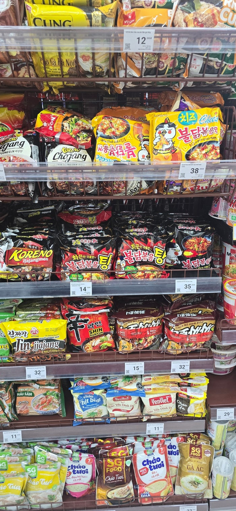
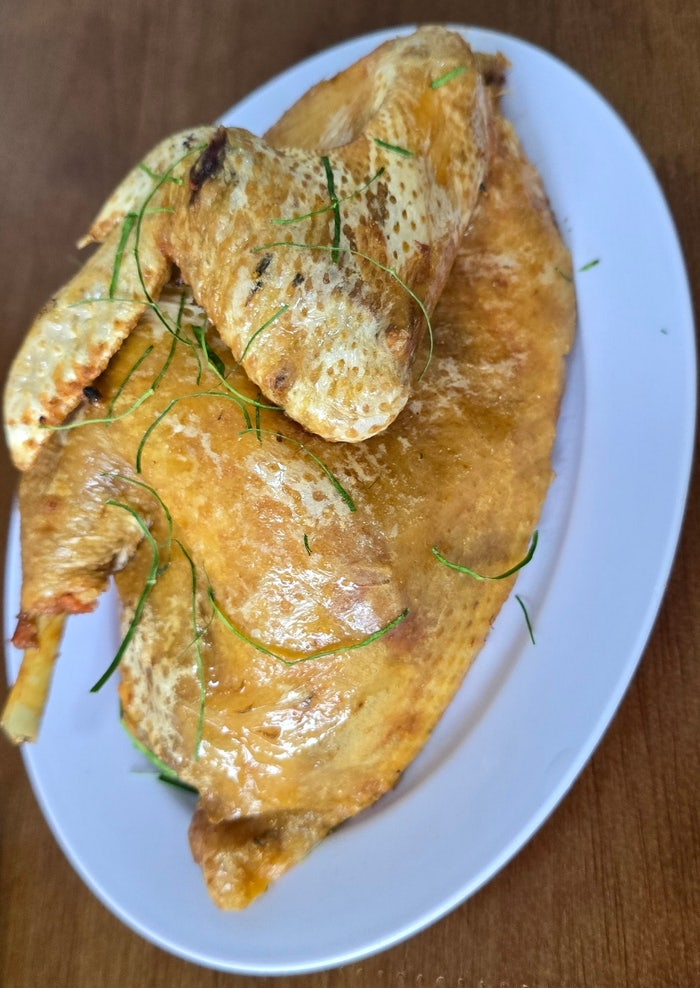
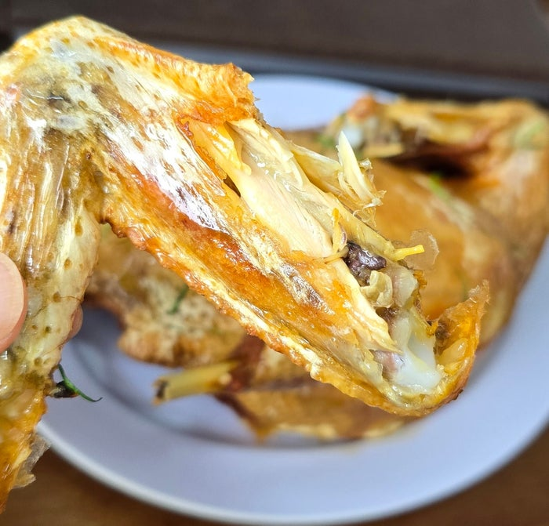
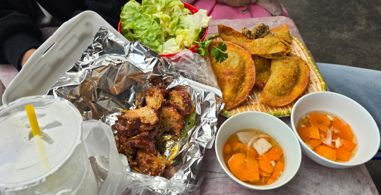
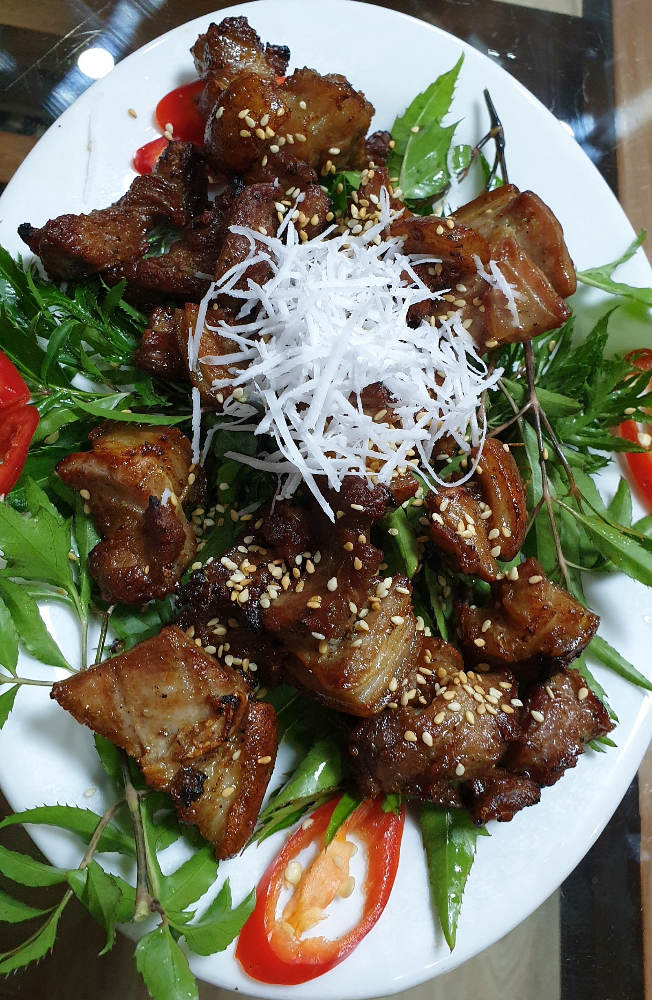
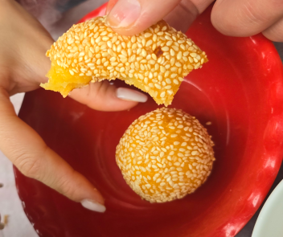

베트남에 갈 때마다 기억에 남는 음식들
베트남을 여러 번 방문하면서 기억에 남는 것은 많습니다.
도로를 가득 메운 오토바이도 있고, 이른 아침부터 사람들이 모이는 전통시장도 있습니다.
하지만 그중에서도 빼놓기 어려운 것이 음식입니다.
한국에서도 이제 베트남 음식은 꽤 익숙해졌습니다.
쌀국수와 반미, 분짜 같은 음식은 한국에서도 어렵지 않게 만날 수 있습니다.
저 역시 처음에는 베트남 음식이라고 하면 쌀국수를 가장 먼저 떠올렸습니다.
하지만 국제결혼 후 베트남을 자주 방문하고, 아내의 고향인 하이퐁에서 시장과 마트를 다니다 보니 생각보다 훨씬 다양한 음식을 만나게 되었습니다.
관광객이 많이 찾는 식당보다 시장과 동네에서 우연히 먹었던 음식이 더 오래 기억에 남는 경우도 많았습니다.
하이퐁 마트에서 만난 신라면과 불닭볶음면
베트남의 마트에 처음 갔을 때 의외로 반가웠던 것이 있습니다.
바로 한국 라면입니다.
신라면을 비롯해 여러 한국 라면이 진열되어 있었고, 특히 불닭볶음면은 상당히 자주 눈에 들어왔습니다.
베트남에 있으면서 한국 제품을 만나면 괜히 한 번 더 보게 됩니다.
저 역시 반가운 마음에 신라면을 구입해 먹어본 적이 있습니다.
그런데 당시 제가 먹었던 제품은 한국에서 먹던 신라면과 맛이 조금 다르게 느껴졌습니다.
분명 익숙한 라면인데 국물의 향과 맛에서 미묘한 차이가 있었습니다.
개인적으로는 한국 제품보다 조금 낯선 향이 느껴졌습니다.
처음에는 “내가 베트남에 와 있어서 그렇게 느끼는 것인가?”라는 생각도 했습니다.
정확한 이유는 알 수 없지만, 같은 브랜드의 음식이라도 현지에서 먹으면 조금 다르게 느껴질 수 있다는 점이 재미있었습니다.
반면 불닭볶음면은 마트와 상점에서 자주 볼 수 있어 한국 음식이 베트남 사람들의 생활 속에도 많이 들어와 있다는 것을 실감하게 했습니다.

처음에는 질기다고 생각했던 베트남 닭고기
베트남에서 먹었던 음식 가운데 한국과 식감 차이를 가장 크게 느꼈던 것 중 하나는 닭고기였습니다.
처음 먹었을 때의 솔직한 생각은 이랬습니다.
“왜 이렇게 질기지?”
한국에서 흔히 먹던 부드러운 닭고기에 익숙했던 저에게 베트남에서 먹은 닭고기는 상당히 탄력이 있었습니다.
하지만 몇 번 먹다 보니 그 식감이 오히려 매력적으로 느껴지기 시작했습니다.
부드럽게 부서지는 고기라기보다 씹는 맛이 살아 있었습니다.
한국에서 흔히 이야기하는 촌닭이나 토종닭의 식감과 비슷하게 느껴지는 경우도 있었습니다.
특히 기억에 남는 것은 숯불에 구운 닭고기였습니다.
겉은 숯불 향이 배어 있고 속살은 탄력이 있었습니다.
가슴살 부위조차 제가 예상했던 것만큼 퍽퍽하지 않았습니다.
씹을수록 고소한 맛이 느껴졌습니다.
처음에는 낯설었던 식감이 나중에는 오히려 베트남에서 다시 먹고 싶은 음식 중 하나가 되었습니다.


시장에서 자주 먹었던 숯불 돼지고기와 반고이
하이퐁의 시장과 동네 음식점을 다니다 보면 숯불에 고기를 굽는 모습을 자주 볼 수 있습니다.
고기가 숯불 위에서 익으면서 나는 냄새는 그냥 지나치기 어렵습니다.
제가 자주 먹었던 음식 중 하나는 분짜에 들어가는 숯불 돼지고기인 짜(Chả)와 반고이(Bánh Gối)였습니다.
숯불에 구운 돼지고기는 달콤하고 짭짤한 양념 맛이 느껴집니다.
여기에 바삭하게 튀긴 반고이를 함께 먹었습니다.
반고이는 처음 보면 한국의 튀김만두와 비슷한 모습입니다.
하지만 직접 먹어보면 조금 다른 음식이라는 것을 알 수 있습니다.
바삭한 겉부분 안에는 당면과 고기 등 여러 재료가 들어 있습니다.
함께 나오는 느억쩜(Nước Chấm)에 찍어 먹으면 달콤하면서도 짭짤하고 약간 새콤한 맛이 더해집니다.
제가 먹어본 베트남 음식 가운데 비교적 한국 사람도 편하게 접할 수 있는 음식이라고 생각합니다.
특히 고수나 강한 향채에 아직 익숙하지 않은 사람이라면 이런 숯불 고기나 튀김 종류부터 먹어보는 것도 괜찮습니다.

지금도 기억에 남는 염소고기 구이
베트남에서 먹었던 음식 가운데 지금도 유난히 기억에 남는 것이 있습니다.
바로 염소고기 요리입니다.
제가 먹었던 음식은 Dê Nướng, 즉 염소고기 구이 종류였습니다.
한국에서는 염소고기를 자주 먹을 기회가 없었기 때문에 처음에는 특유의 냄새가 강하지 않을까 생각했습니다.
하지만 실제로 먹어본 염소고기 구이는 예상과 상당히 달랐습니다.
제가 먹었던 음식은 달콤하면서도 짭짤한 양념이 고기에 잘 배어 있었습니다.
걱정했던 특유의 향도 크게 강하지 않았습니다.
특히 고기 위에 올라간 코코넛 채와 함께 먹었던 것이 인상적이었습니다.
고기의 식감과 코코넛의 고소한 맛이 생각보다 잘 어울렸습니다.
베트남에서 여러 음식을 먹었지만, 다시 먹고 싶은 음식을 꼽으라면 염소고기 구이는 지금도 꽤 높은 순위에 있습니다.
한국에서는 쉽게 접하지 못했던 음식이어서 더욱 기억에 남는 것 같습니다.

100개라도 먹을 수 있을 것 같았던 시장 간식
베트남의 시장에는 화려하지 않지만 한 번 먹으면 기억에 남는 간식도 많습니다.
제가 특히 좋아했던 것 중 하나가 참깨가 가득 묻어 있는 찹쌀 간식이었습니다.
반란(Bánh Rán)이라고 부르는 베트남식 튀김 간식입니다.
처음 보았을 때는 특별한 음식이라고 생각하지 않았습니다.
시장 한쪽에 놓여 있는 작은 간식이었습니다.
하지만 한 입 먹어보고 생각이 완전히 달라졌습니다.
겉부분은 바삭했습니다.
그런데 안쪽은 놀랄 정도로 쫀득했습니다.
여기에 참깨의 고소한 향과 속에 들어 있는 달콤한 앙금이 잘 어울렸습니다.
솔직히 말하면 처음 먹었을 때 이런 생각이 들었습니다.
“이건 100개라도 먹을 수 있겠다.”
물론 실제로 100개를 먹을 수 있다는 뜻은 아닙니다.
그만큼 제 입맛에 잘 맞았습니다.
화려한 고급 음식도 아니고 유명 관광지의 음식도 아닙니다.
하지만 지금도 베트남 시장 이야기를 하면 가장 먼저 생각나는 간식 중 하나입니다.

시장에서 먹는 음식은 조금 더 기억에 남았습니다
베트남에서 유명한 식당이나 관광객이 많이 찾는 음식점에도 가보았습니다.
하지만 이상하게도 제 기억에는 시장에서 먹었던 음식이 더 많이 남아 있습니다.
시장 한쪽 작은 의자에 앉아 먹었던 음식.
숯불 위에서 바로 구운 고기.
장을 보다가 우연히 사 먹은 간식.
아내가 먹어보라고 건네준 처음 보는 음식.
이런 경험은 음식의 맛만 기억에 남는 것이 아니었습니다.
그날 시장의 모습과 사람들의 목소리, 오토바이 소리와 주변 풍경까지 함께 기억에 남았습니다.
아마 그래서 시장 음식이 더 특별하게 느껴지는 것인지도 모르겠습니다.
베트남 음식은 쌀국수만 있는 것이 아니었습니다
한국에서 베트남 음식을 이야기하면 아직도 쌀국수를 가장 먼저 떠올리는 경우가 많습니다.
저 역시 처음에는 그랬습니다.
하지만 베트남을 여러 번 방문하고 현지의 시장과 동네를 다녀보니 쌀국수는 수많은 베트남 음식 가운데 하나였습니다.
숯불에 구운 닭고기와 돼지고기.
바삭하게 튀긴 반고이.
염소고기 구이.
시장 한쪽에서 판매하는 작은 찹쌀 간식까지.
지역과 시장, 가정에 따라 다양한 음식을 만날 수 있었습니다.
물론 처음 먹는 음식이 모두 입맛에 맞았던 것은 아닙니다.
고수처럼 적응하는 데 시간이 필요했던 음식도 있습니다.
하지만 낯선 음식을 하나씩 먹어보는 과정 역시 제가 베트남이라는 나라를 알아가는 방법 중 하나였습니다.
지금도 베트남에 가면 유명한 식당을 찾는 것보다 시장을 천천히 둘러보며 처음 보는 음식을 구경하는 일이 더 재미있을 때가 있습니다.
다음에는 또 어떤 음식을 만나게 될지 모르기 때문입니다.
한베커플은 실제 한·베 국제결혼과 베트남 현지 생활 경험을 바탕으로, 직접 보고 먹어본 베트남의 음식과 생활문화를 이야기합니다.